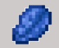
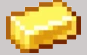
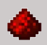
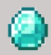
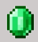

Minecraft


Les différents minerais dans le monde "normal"

- Le charbon
 Le charbon est un minerai très commun, qui est souvent trouvable entre les couches 0 et 52 allant jusqu’à 256 en montagne. La pioche minimale pour la miner est la pioche en bois, alors dès le début de l'aventure nous pouvons la miner. Le charbon peut servir à créer des torches mais aussi à faire cuire des viandes animales ou faire fondre des minerais.
Il est aussi modifiable en bloque de charbon qui durera plus longtemps dans le four ou haut-fourneau, il sert aussi en bloque pour un gain de place dans les stockages, et aussi faire de la décoration pour les adeptes de la construction.
Le charbon est un minerai très commun, qui est souvent trouvable entre les couches 0 et 52 allant jusqu’à 256 en montagne. La pioche minimale pour la miner est la pioche en bois, alors dès le début de l'aventure nous pouvons la miner. Le charbon peut servir à créer des torches mais aussi à faire cuire des viandes animales ou faire fondre des minerais.
Il est aussi modifiable en bloque de charbon qui durera plus longtemps dans le four ou haut-fourneau, il sert aussi en bloque pour un gain de place dans les stockages, et aussi faire de la décoration pour les adeptes de la construction.
- Le fer
 Le fer est un minerai commun, qui est souvent trouvable entre les couches 0 et 72 et se trouve jusqu'à la couche maximale si vous êtes en montagne.
La pioche minimale pour la miner est la pioche en pierre et nous pouvons bien-sûr la miner avec une pioche plus efficace. Quand on trouve un minerai de fer, il faut le faire fondre dans un four ou dans un haut-fourneau pour le transformer en lingot de fer. Les lingots de fer peuvent être convertis en pépites de fer
et en bloque de fer pour le stockage et la construction.
Le fer est un minerai commun, qui est souvent trouvable entre les couches 0 et 72 et se trouve jusqu'à la couche maximale si vous êtes en montagne.
La pioche minimale pour la miner est la pioche en pierre et nous pouvons bien-sûr la miner avec une pioche plus efficace. Quand on trouve un minerai de fer, il faut le faire fondre dans un four ou dans un haut-fourneau pour le transformer en lingot de fer. Les lingots de fer peuvent être convertis en pépites de fer
et en bloque de fer pour le stockage et la construction.
- Le lapis-lazuli

- L'or

- La redstone

- Le diamant

- L'émeraude
